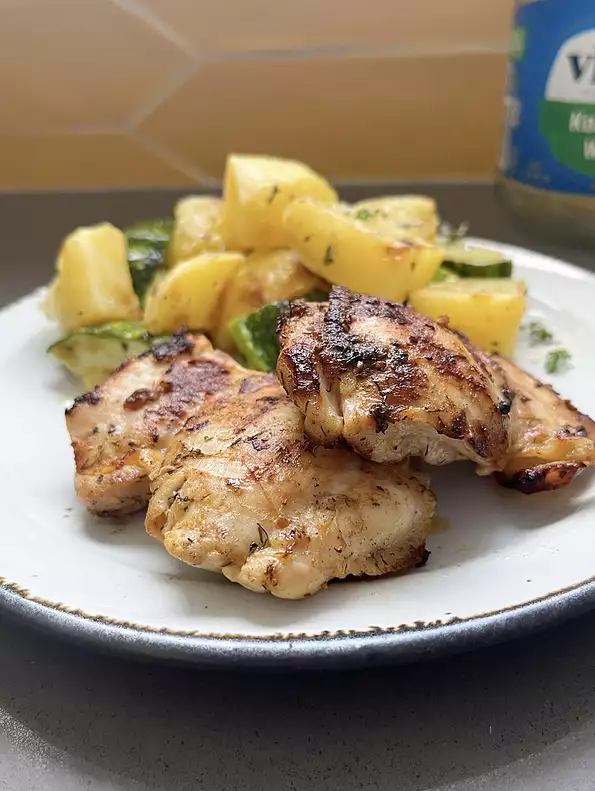

Grilled Dill Pickle Chicken Thighs

Description
The next time you reach for that last pickle in the jar, hang on to the juice. Chicken marinated in pickle
juice makes some mighty tender grilled chicken. The pickle flavor does not overpower, but you do need to like dill pickles to enjoy this.
- Prep: 5 mins
- Cook: 15 mins
- Additional: 4 hrs
- Total: 4 hrs 20 mins
- Servings: 4
- Yield: 4 servings
Ingredients
- 4 Skinless Chicken Thighs
- 1 1/2 cups Dill Pickle Juice
- 1 tbsp Olive Oil
- 1/2 tsp Salt
- 1/2 tsp Paprika
- 1/2 tsp Dill
- 1/2 tsp Black Pepper
Directions
- Place chicken thighs in a gallon-sized resealable bag. Pour pickle juice over the chicken. Seal bag and
refrigerate for 4 hours.
- Preheat an outdoor grill for medium-high heat and lightly oil the grate.
- Whisk olive oil, seasoned salt, paprika, dill, and pepper together. Remove chicken from pickle juice;
discard the juice. Brush all sides of the chicken with the seasoned oil.
- Grill chicken for 6 minutes. Flip and grill until no longer pink in the center, about 6 minutes more.